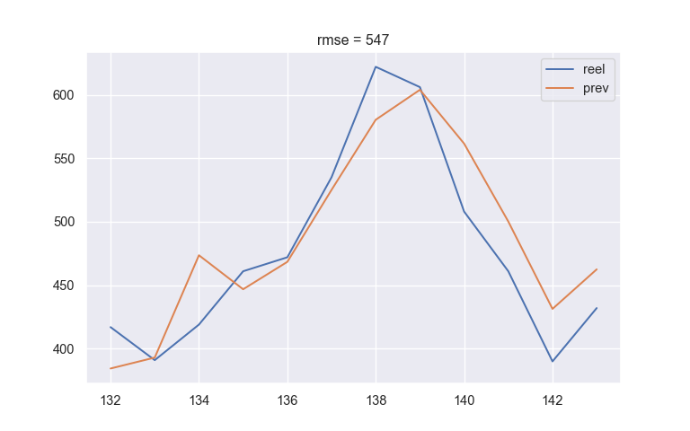

Series temporelles avec Keras
On teste ici differentes modelisations a base de reseaux neuronaux sous TensorFlow et on les compare a des modeles de regression classiques.
1 Modules et donnees
library("reticulate")
use_condaenv(condaenv = "env_tf26")1.1 Modules
import numpy as np
import pandas as pd
pd.set_option('display.max_columns', None)
import math
import sys
from sklearn.model_selection import train_test_split
from sklearn.linear_model import LinearRegression
from sklearn.metrics import mean_squared_error
import statsmodels.api as sm
import tensorflow as tf
from tensorflow.keras import layers
from tensorflow.keras.layers import Dense, GRU, Dropout, SimpleRNN
from tensorflow.keras.models import Sequential
from tensorflow.keras.callbacks import EarlyStopping
# https://github.com/philipperemy/keras-tcn
from tcn import TCN
# pour regler un bug graphique assez courant avec Anaconda,
# adapter le chemin vers le dossier 'plugins/platforms'
import os
from os import path
os.environ['QT_QPA_PLATFORM_PLUGIN_PATH'] = 'C:/Users/Sebastien/Anaconda3/Library/plugins/platforms'
os.chdir(".")
import matplotlib.pyplot as plt
import seaborn as sns
sns.set()
tf.random.set_seed(2021)
# calcul de la rmse
def rmse(u,v):
return int(mean_squared_error(u,v)**1/2)Les versions Python et TensorFlow utilisees.
sys.version
tf.__version__'3.9.6 (default, Jul 30 2021, 11:42:22) [MSC v.1916 64 bit (AMD64)]'
'2.6.0'1.2 Description des donnees Airline Passenger
Il s’agit du nombre mensuel de passagers du secteur aerien de 1949 a 1960, donnees qu’on a deja utilise pour tester le module prophet dans un autre document.
donnees_r = data.frame(AirPassengers)
donnees_r["Month"] = c(sapply(1949:1960, \(x) paste(x, month.abb)))
donnees_r["Passengers"] = donnees_r$AirPassengers
donnees_r$AirPassengers = NULLdonnees = r.donnees_r
donnees.head() Month Passengers
0 1949 Jan 112.0
1 1949 Feb 118.0
2 1949 Mar 132.0
3 1949 Apr 129.0
4 1949 May 121.0donnees.rename(columns = {'Passengers':'X'}, inplace = True)
donnees.X = donnees.X.astype('float32')
donnees.reset_index(drop = True) Month X
0 1949 Jan 112.0
1 1949 Feb 118.0
2 1949 Mar 132.0
3 1949 Apr 129.0
4 1949 May 121.0
.. ... ...
139 1960 Aug 606.0
140 1960 Sep 508.0
141 1960 Oct 461.0
142 1960 Nov 390.0
143 1960 Dec 432.0
[144 rows x 2 columns]La serie est multiplicative avec une saisonnalite de periode 12 et la tendance est lineaire par morceaux.
periode = 12
decomposition = sm.tsa.seasonal_decompose(donnees.X, model='multiplicative', period = 12)
decomposition.plot()
plt.show()2 Modelisation par tendance et saisonnalite
On definit une colonne “partition” pour scinder les donnees en jeux d’apprentissage (donnees.partition == True) et de test, l’apprentissage allant jusqu’a mars 1956.
donnees["partition"] = pd.Series(donnees.index) <= 0.6 * len(donnees)
donnees["partition"].value_counts()True 87
False 57
Name: partition, dtype: int642.1 Modele lineaire
On se place d’avril 1953 a mars 1956, soit les 3 dernieres annees de l’apprentissage, pour obtenir une tendance par moyenne mobile et une saisonnalite les plus fiables afin de realiser une prevision par regression lineaire.
# X = tendance * saisonnalite * bruit
# profondeur de calcul de la tendance a partir des donnees recentes de l'apprentissage
K = 12 * 3
dtf = donnees[donnees.partition].copy()
dtf = dtf[-K:]
decomposition = sm.tsa.seasonal_decompose(dtf.X, model='multiplicative', period = periode)
dtf["temps"] = list(dtf.index)
dtf["tendance"] = decomposition.trend
dtf Month X partition temps tendance
51 1953 Apr 235.0 True 51 NaN
52 1953 May 229.0 True 52 NaN
53 1953 Jun 243.0 True 53 NaN
54 1953 Jul 264.0 True 54 NaN
55 1953 Aug 272.0 True 55 NaN
56 1953 Sep 237.0 True 56 NaN
57 1953 Oct 211.0 True 57 224.583333
58 1953 Nov 180.0 True 58 224.458333
59 1953 Dec 201.0 True 59 225.541667
60 1954 Jan 204.0 True 60 228.000000
61 1954 Feb 188.0 True 61 230.458333
62 1954 Mar 235.0 True 62 232.250000
63 1954 Apr 227.0 True 63 233.916667
64 1954 May 234.0 True 64 235.625000
65 1954 Jun 264.0 True 65 237.750000
66 1954 Jul 302.0 True 66 240.500000
67 1954 Aug 293.0 True 67 243.958333
68 1954 Sep 259.0 True 68 247.166667
69 1954 Oct 229.0 True 69 250.250000
70 1954 Nov 203.0 True 70 253.500000
71 1954 Dec 229.0 True 71 257.125000
72 1955 Jan 242.0 True 72 261.833333
73 1955 Feb 233.0 True 73 266.666667
74 1955 Mar 267.0 True 74 271.125000
75 1955 Apr 269.0 True 75 275.208333
76 1955 May 270.0 True 76 278.500000
77 1955 Jun 315.0 True 77 281.958333
78 1955 Jul 364.0 True 78 285.750000
79 1955 Aug 347.0 True 79 289.333333
80 1955 Sep 312.0 True 80 293.250000
81 1955 Oct 274.0 True 81 NaN
82 1955 Nov 237.0 True 82 NaN
83 1955 Dec 278.0 True 83 NaN
84 1956 Jan 284.0 True 84 NaN
85 1956 Feb 277.0 True 85 NaN
86 1956 Mar 317.0 True 86 NaNOn modelise lineairement la tendance et on recupere la saisonnalite calculee par statsmodels, ce qui permet d’en deduire la serie residuelle.
debut_saison = (dtf.temps.min() // periode + 1) * periode
saisons = list(decomposition.seasonal.loc[debut_saison:(debut_saison + periode - 1)])
repet_saisons = len(donnees) // periode + 1
dtf.dropna(inplace = True)
reg = LinearRegression();
reg.fit(dtf[["temps"]], dtf.tendance);
donnees["tendance"] = reg.predict(pd.Series(range(len(donnees))).to_frame())
donnees["saisons"] = (saisons*repet_saisons)[:len(donnees)]
donnees["residus"] = donnees.X / donnees.tendance / donnees.saisons2.2 Qualite du modele
La tendance lineaire, les residus et la serie de donnees complete, on voit qu’avant avril 1953 la tendance avait une pente differente.
donnees[["X", "tendance"]].plot();
plt.show()donnees[["residus", "saisons"]].plot();
plt.show()On prevoit les 57 valeurs du futur en une fois par une modelisation parametrique simple.
donnees["prev"] = donnees.tendance * donnees.saisons
test = ~donnees.partition
donnees.loc[test, ["X", "prev"]].plot();
plt.title(f"rmse = {rmse(donnees.prev[test], donnees.X[test])}");
plt.show()3 Prevision du mois suivant par modeles neuronaux
On va proceder de deux manieres a partir de la connaissance des K derniers mois :
- par regression lineaire et par couche Dense appliquees a K variables (on peut utiliser tout modele de regression de Machine Learning)
- par couches récurrentes RNN et GRU et par couche de convolution TCN
On choisit K = 12.
3.1 Early stopping et graphiques de performance
Si la perte ne diminue plus sur l’echantillon de validation “val_loss” lors d’une succession de 50 epoques, l’entrainement s’arrete et revient a la meilleure perte observee.
early_stopping = EarlyStopping(
monitor = 'val_loss',
verbose = 1,
patience = 50,
restore_best_weights = True)Graphiques qui permettent de detecter le surapprentissage du modele (courbe de perte pour la validation superieure a celle de l’apprentissage) et l’evolution de la metrique “metier”, ici la rmse.
def perf(histoire):
dtf = pd.DataFrame(histoire.history)
colonnes = dtf.columns
dtf = dtf.reset_index().rename(columns = {'index': 'epochs'})
dtf_tr = pd.melt(dtf, id_vars = ['epochs'], value_vars = colonnes,
var_name ='noms_col', value_name='valeurs_col')
dtf_tr["metrique"] = dtf_tr.noms_col.str.replace("^val_", "", regex = True)
dtf_tr["echantillon"] = "val"
dtf_tr.loc[dtf_tr.noms_col == dtf_tr.metrique, "echantillon"] = "train"
g = sns.FacetGrid(dtf_tr, col="metrique", hue = "echantillon", sharey = False, col_wrap = 2)
g = g.map_dataframe(sns.lineplot, x = "epochs",y = "valeurs_col").add_legend()
axes = g.axes
axes[0].set_ylim(0,10000)
axes[1].set_ylim(0,150)
plt.show()3.2 Preparation des donnees
3.2.1 Modele lineaire et couche Dense
On cree les K colonnes des mois precedents.
donnees.drop(columns = "prev", inplace = True)
dtf_Xcol = donnees.copy()
for i in range(K-1):
dtf_Xcol["X"+str(i+1)] =dtf_Xcol.X.shift(-i-1)
dtf_Xcol["Y"] = dtf_Xcol.X.shift(-K)
dtf_Xcol.dropna(inplace = True)
colonnes = ["X"] + ["X"+str(i+1) for i in range(K-1)]
Y_train = dtf_Xcol.loc[dtf_Xcol.partition, "Y"]
train_dense = dtf_Xcol.loc[dtf_Xcol.partition, colonnes]
test_dense = dtf_Xcol.loc[~dtf_Xcol.partition, colonnes]
dtf_Xcol Month X partition tendance saisons residus X1 X2 \
0 1949 Jan 112.0 True 36.816081 0.912383 3.334289 118.0 132.0
1 1949 Feb 118.0 True 39.970048 0.847441 3.483678 132.0 129.0
2 1949 Mar 132.0 True 43.124016 1.001484 3.056404 129.0 121.0
3 1949 Apr 129.0 True 46.277983 0.977029 2.853038 121.0 135.0
4 1949 May 121.0 True 49.431950 0.984408 2.486580 135.0 148.0
.. ... ... ... ... ... ... ... ...
127 1959 Aug 559.0 False 437.369940 1.203979 1.061559 463.0 407.0
128 1959 Sep 463.0 False 440.523907 1.059261 0.992221 407.0 362.0
129 1959 Oct 407.0 False 443.677874 0.930246 0.986117 362.0 405.0
130 1959 Nov 362.0 False 446.831842 0.803905 1.007766 405.0 417.0
131 1959 Dec 405.0 False 449.985809 0.893732 1.007045 417.0 391.0
X3 X4 X5 X6 X7 X8 X9 X10 X11 Y
0 129.0 121.0 135.0 148.0 148.0 136.0 119.0 104.0 118.0 115.0
1 121.0 135.0 148.0 148.0 136.0 119.0 104.0 118.0 115.0 126.0
2 135.0 148.0 148.0 136.0 119.0 104.0 118.0 115.0 126.0 141.0
3 148.0 148.0 136.0 119.0 104.0 118.0 115.0 126.0 141.0 135.0
4 148.0 136.0 119.0 104.0 118.0 115.0 126.0 141.0 135.0 125.0
.. ... ... ... ... ... ... ... ... ... ...
127 362.0 405.0 417.0 391.0 419.0 461.0 472.0 535.0 622.0 606.0
128 405.0 417.0 391.0 419.0 461.0 472.0 535.0 622.0 606.0 508.0
129 417.0 391.0 419.0 461.0 472.0 535.0 622.0 606.0 508.0 461.0
130 391.0 419.0 461.0 472.0 535.0 622.0 606.0 508.0 461.0 390.0
131 419.0 461.0 472.0 535.0 622.0 606.0 508.0 461.0 390.0 432.0
[132 rows x 18 columns]3.2.2 Couches Recurrentes et Convolutives
On compile les K colonnes en une colonne de listes et on met le tenseur a la bonne dimension : nombre d’echantillons * historique de profondeur K * dimension de chaque valeur (1 pour notre serie univariee).
dtf_Xlist = dtf_Xcol.copy()
dtf_Xlist["val_prec"] = dtf_Xlist[colonnes].values.tolist()
dtf_Xlist.drop(columns = colonnes, inplace = True)
X_train = list(dtf_Xlist.loc[dtf_Xlist.partition, "val_prec"])
X_test = list(dtf_Xlist.loc[~dtf_Xlist.partition, "val_prec"])
X_train = np.reshape(X_train, (len(X_train), K, 1))
X_test = np.reshape(X_test, (len(X_test), K, 1))
dtf_Xlist[["val_prec", "Y"]] val_prec Y
0 [112.0, 118.0, 132.0, 129.0, 121.0, 135.0, 148... 115.0
1 [118.0, 132.0, 129.0, 121.0, 135.0, 148.0, 148... 126.0
2 [132.0, 129.0, 121.0, 135.0, 148.0, 148.0, 136... 141.0
3 [129.0, 121.0, 135.0, 148.0, 148.0, 136.0, 119... 135.0
4 [121.0, 135.0, 148.0, 148.0, 136.0, 119.0, 104... 125.0
.. ... ...
127 [559.0, 463.0, 407.0, 362.0, 405.0, 417.0, 391... 606.0
128 [463.0, 407.0, 362.0, 405.0, 417.0, 391.0, 419... 508.0
129 [407.0, 362.0, 405.0, 417.0, 391.0, 419.0, 461... 461.0
130 [362.0, 405.0, 417.0, 391.0, 419.0, 461.0, 472... 390.0
131 [405.0, 417.0, 391.0, 419.0, 461.0, 472.0, 535... 432.0
[132 rows x 2 columns]3.3 Architecture et entrainement des modeles
3.3.1 Regression
model_lin = LinearRegression();
model_lin.fit(train_dense, Y_train);3.3.2 Couche Dense
model_dense = Sequential()
model_dense.add(Dense(100, input_dim = len(colonnes)))
model_dense.add(Dense(1))
model_dense.compile(loss = "mean_squared_error", metrics = [tf.keras.metrics.RootMeanSquaredError()])
history_dense = model_dense.fit(train_dense,
Y_train,
epochs = 100,
batch_size = 16,
verbose = 0,
validation_split = 0.3,
callbacks = [early_stopping])3.3.3 RNN
model_rnn = Sequential()
model_rnn.add(SimpleRNN(256, activation='relu', input_shape = (K, 1)))
model_rnn.add(Dropout(0.2))
model_rnn.add(Dense(1))
model_rnn.compile(loss = "mean_squared_error", metrics = [tf.keras.metrics.RootMeanSquaredError()])
history_rnn = model_rnn.fit(X_train,
Y_train,
epochs = 300,
batch_size = 16,
verbose = 0,
validation_split = 0.3,
callbacks = [early_stopping])Restoring model weights from the end of the best epoch.
Epoch 00287: early stopping3.3.4 GRU
model_gru = Sequential()
model_gru.add(GRU(256, activation='relu', input_shape = (K, 1)))
model_gru.add(Dropout(0.2))
model_gru.add(Dense(1))
model_gru.compile(loss = "mean_squared_error", metrics = [tf.keras.metrics.RootMeanSquaredError()])
history_gru = model_gru.fit(X_train,
Y_train,
epochs = 200,
batch_size = 16,
verbose = 0,
validation_split = 0.3,
callbacks = [early_stopping])3.3.5 TCN
tcn_layer = TCN(input_shape = (K, 1),
nb_filters = 50,
kernel_size = 12,
dilations = (1, 2))
print('Receptive field size =', tcn_layer.receptive_field)
model_tcn = Sequential()
model_tcn.add(tcn_layer)
model_tcn.add(Dropout(0.2))
model_tcn.add(Dense(1))
model_tcn.compile(loss = "mean_squared_error", metrics = [tf.keras.metrics.RootMeanSquaredError()])
history_tcn = model_tcn.fit(X_train,
Y_train,
epochs = 300,
batch_size = 16,
verbose = 0,
validation_split = 0.3,
callbacks = [early_stopping])Receptive field size = 67
Restoring model weights from the end of the best epoch.
Epoch 00164: early stopping3.4 Performance lors de l’entrainement
3.4.1 Couche Dense
perf(history_dense)3.4.2 RNN
perf(history_rnn)3.4.3 GRU
perf(history_gru)3.4.4 TCN
perf(history_tcn)3.5 Qualite de la prevision sur l’echantillon test
3.5.1 Regression
dtf_Xcol["prev"] = model_lin.predict(dtf_Xcol[colonnes]); test = ~dtf_Xcol.partition
dtf_Xcol.loc[test, ["Y", "prev"]].plot();
plt.title(f"rmse = {rmse(dtf_Xcol.prev[test], dtf_Xcol.Y[test])}")
plt.show(ylim = (300, 650))3.5.2 Couche Dense
dtf_Xcol["prev"] = model_dense.predict(dtf_Xcol[colonnes]);
dtf_Xcol.loc[test, ["Y", "prev"]].plot();
plt.title(f"rmse = {rmse(dtf_Xcol.prev[test], dtf_Xcol.Y[test])}")
plt.show(ylim = (300, 650))3.5.3 RNN
# on applique tf.convert_to_tensor pour eviter des warnings
X = np.concatenate((X_train, X_test))
dtf_Xlist["prev"] = model_rnn.predict(X); test = ~dtf_Xlist.partition
dtf_Xlist.loc[test, ["Y", "prev"]].plot();
plt.title(f"rmse = {rmse(dtf_Xlist.prev[test], dtf_Xlist.Y[test])}")
plt.show(ylim = (300, 650))
3.5.4 GRU
dtf_Xlist["prev"] = model_gru.predict(X)
dtf_Xlist.loc[test, ["Y", "prev"]].plot();
plt.title(f"rmse = {rmse(dtf_Xlist.prev[test], dtf_Xlist.Y[test])}")
plt.show(ylim = (300, 650))3.5.5 TCN
dtf_Xlist["prev"] = model_tcn.predict(X)
dtf_Xlist.loc[test, ["Y", "prev"]].plot();
plt.title(f"rmse = {rmse(dtf_Xlist.prev[test], dtf_Xlist.Y[test])}")
plt.show(ylim = (300, 650))4 Prevision en bloc des L mois suivants
On choisit L = 12.
4.1 Preparation des donnees
On prepare les donnees selon le meme schema que plus haut, avec L colonnes cibles au lieu d’une.
4.1.1 Couche Dense
dtf_Xcol = donnees.copy()
for i in range(K-1):
dtf_Xcol["X"+str(i+1)] =dtf_Xcol.X.shift(-i-1)
for i in range(L):
dtf_Xcol["Y"+str(i+1)] =dtf_Xcol.X.shift(-K-i)
dtf_Xcol.dropna(inplace = True)
colonnesY = ["Y"+str(i+1) for i in range(L)]
Y_train = dtf_Xcol.loc[dtf_Xcol.partition, colonnesY].values
dtf_Xcol.drop(columns = colonnesY, inplace = True)
colonnes = ["X"] + ["X"+str(i+1) for i in range(K-1)]
train_dense = dtf_Xcol.loc[dtf_Xcol.partition, colonnes]
test_dense = dtf_Xcol.loc[~dtf_Xcol.partition, colonnes]4.1.2 Couches Recurrentes
dtf_Xlist = dtf_Xcol.copy()
dtf_Xlist["val_prec"] = dtf_Xlist[colonnes].values.tolist()
dtf_Xlist.drop(columns = colonnes, inplace = True)
X_train = list(dtf_Xlist.loc[dtf_Xlist.partition, "val_prec"])
X_test = list(dtf_Xlist.loc[~dtf_Xlist.partition, "val_prec"])
X_train = np.reshape(X_train, (len(X_train), K, 1))
X_test = np.reshape(X_test, (len(X_test), K, 1))
dtf_Xlist Month partition tendance saisons residus \
0 1949 Jan True 36.816081 0.912383 3.334289
1 1949 Feb True 39.970048 0.847441 3.483678
2 1949 Mar True 43.124016 1.001484 3.056404
3 1949 Apr True 46.277983 0.977029 2.853038
4 1949 May True 49.431950 0.984408 2.486580
.. ... ... ... ... ...
116 1958 Sep False 402.676298 1.059261 0.947158
117 1958 Oct False 405.830266 0.930246 0.950938
118 1958 Nov False 408.984233 0.803905 0.942867
119 1958 Dec False 412.138200 0.893732 0.914913
120 1959 Jan False 415.292168 0.912383 0.950105
val_prec
0 [112.0, 118.0, 132.0, 129.0, 121.0, 135.0, 148...
1 [118.0, 132.0, 129.0, 121.0, 135.0, 148.0, 148...
2 [132.0, 129.0, 121.0, 135.0, 148.0, 148.0, 136...
3 [129.0, 121.0, 135.0, 148.0, 148.0, 136.0, 119...
4 [121.0, 135.0, 148.0, 148.0, 136.0, 119.0, 104...
.. ...
116 [404.0, 359.0, 310.0, 337.0, 360.0, 342.0, 406...
117 [359.0, 310.0, 337.0, 360.0, 342.0, 406.0, 396...
118 [310.0, 337.0, 360.0, 342.0, 406.0, 396.0, 420...
119 [337.0, 360.0, 342.0, 406.0, 396.0, 420.0, 472...
120 [360.0, 342.0, 406.0, 396.0, 420.0, 472.0, 548...
[121 rows x 6 columns]4.2 Architecture et entrainement des modeles
4.2.1 Couche Dense
model_dense2 = Sequential()
model_dense2.add(Dense(100, input_dim = len(colonnes)))
model_dense2.add(Dense(L))
model_dense2.compile(loss = "mean_squared_error", metrics = [tf.keras.metrics.RootMeanSquaredError()])
history_dense = model_dense2.fit(train_dense,
Y_train,
epochs = 100,
batch_size = 16,
verbose = 0,
validation_split = 0.3,
callbacks = [early_stopping])4.2.2 RNN
model_rnn2 = Sequential()
model_rnn2.add(SimpleRNN(260, activation='relu', input_shape = (K, 1)))
model_rnn2.add(Dropout(0.2))
model_rnn2.add(Dense(L))
model_rnn2.compile(loss = "mean_squared_error", metrics = [tf.keras.metrics.RootMeanSquaredError()])
history_rnn = model_rnn2.fit(X_train,
Y_train,
epochs = 300,
batch_size = 16,
verbose = 0,
validation_split = 0.3,
callbacks = [early_stopping])4.2.3 GRU
model_gru2 = Sequential()
model_gru2.add(GRU(256, activation='relu', input_shape = (K, 1)))
model_gru2.add(Dropout(0.2))
model_gru2.add(Dense(L))
model_gru2.compile(loss = "mean_squared_error", metrics = [tf.keras.metrics.RootMeanSquaredError()])
history_gru = model_gru2.fit(X_train,
Y_train,
epochs = 300,
batch_size = 16,
verbose = 0,
validation_split = 0.3,
callbacks = [early_stopping])4.2.4 TCN
tcn_layer = TCN(input_shape = (K, 1),
nb_filters = 30,
kernel_size = 3,
dilations = (1, 2))
print('Receptive field size =', tcn_layer.receptive_field)
model_tcn2 = Sequential()
model_tcn2.add(tcn_layer)
model_tcn2.add(Dropout(0.2))
model_tcn2.add(Dense(L))
model_tcn2.compile(loss = "mean_squared_error", metrics = [tf.keras.metrics.RootMeanSquaredError()])
history_tcn = model_tcn2.fit(X_train,
Y_train,
epochs = 300,
batch_size = 16,
verbose = 0,
validation_split = 0.3,
callbacks = [early_stopping])Receptive field size = 134.3 Performance lors de l’entrainement
4.3.1 Couche Dense
perf(history_dense)4.3.2 RNN
perf(history_rnn)4.3.3 GRU
perf(history_gru)4.3.4 TCN
perf(history_tcn)4.4 Qualite de la prevision sur l’annee 1960
4.4.1 Couche Dense
resultats = pd.DataFrame({"reel": donnees.X[-L:],
"prev": np.squeeze(model_dense2.predict(dtf_Xcol.tail(1)[colonnes]))})
resultats.plot();
plt.title(f"rmse = {rmse(resultats.reel, resultats.prev)}")
plt.show(ylim = (300, 650))4.4.2 RNN
test = np.reshape(X_test[-1,:], (1,L,1))
resultats = pd.DataFrame({"reel": donnees.X[-L:],
"prev": np.squeeze(model_rnn2.predict(test))})
resultats.plot();
plt.title(f"rmse = {rmse(resultats.reel, resultats.prev)}")
plt.show(ylim = (300, 650))
4.4.3 GRU
resultats = pd.DataFrame({"reel": donnees.X[-L:],
"prev": np.squeeze(model_gru2.predict(test))})
resultats.plot();
plt.title(f"rmse = {rmse(resultats.reel, resultats.prev)}")
plt.show(ylim = (300, 650))WARNING:tensorflow:5 out of the last 13 calls to <function Model.make_predict_function.<locals>.predict_function at 0x0000000060A8E160> triggered tf.function retracing. Tracing is expensive and the excessive number of tracings could be due to (1) creating @tf.function repeatedly in a loop, (2) passing tensors with different shapes, (3) passing Python objects instead of tensors. For (1), please define your @tf.function outside of the loop. For (2), @tf.function has experimental_relax_shapes=True option that relaxes argument shapes that can avoid unnecessary retracing. For (3), please refer to https://www.tensorflow.org/guide/function#controlling_retracing and https://www.tensorflow.org/api_docs/python/tf/function for more details.4.4.4 TCN
resultats = pd.DataFrame({"reel": donnees.X[-L:],
"prev": np.squeeze(model_tcn2.predict(test))})
resultats.plot();
plt.title(f"rmse = {rmse(resultats.reel, resultats.prev)}")
plt.show(ylim = (300, 650))WARNING:tensorflow:6 out of the last 14 calls to <function Model.make_predict_function.<locals>.predict_function at 0x0000000060B18280> triggered tf.function retracing. Tracing is expensive and the excessive number of tracings could be due to (1) creating @tf.function repeatedly in a loop, (2) passing tensors with different shapes, (3) passing Python objects instead of tensors. For (1), please define your @tf.function outside of the loop. For (2), @tf.function has experimental_relax_shapes=True option that relaxes argument shapes that can avoid unnecessary retracing. For (3), please refer to https://www.tensorflow.org/guide/function#controlling_retracing and https://www.tensorflow.org/api_docs/python/tf/function for more details.
C:\Users\SEBAST~1\ANACON~1\envs\env_tf26\lib\site-packages\pandas\plotting\_matplotlib\core.py:345: RuntimeWarning: More than 20 figures have been opened. Figures created through the pyplot interface (`matplotlib.pyplot.figure`) are retained until explicitly closed and may consume too much memory. (To control this warning, see the rcParam `figure.max_open_warning`).
fig = self.plt.figure(figsize=self.figsize)5 Prevision iteree des L mois suivants
On reprend les modeles entraines pour predire la valeur suivante. Cette nouvelle valeur est ensuite consideree comme la derniere valeur connue, et on reapplique les modeles pour predire la valeur qui la suit, etc.
5.1 Calcul des previsions
5.1.1 Regression
dernieres_valeurs = dtf_Xcol[colonnes].tail(1)
noms = dernieres_valeurs.columns
for i in range(L):
prev = model_lin.predict(dernieres_valeurs)[0]
decale_valeurs = dernieres_valeurs.values[0] .tolist()[1:]
decale_valeurs.append(prev)
dernieres_valeurs = pd.DataFrame(np.reshape(decale_valeurs, (1,12)), columns = noms)
prev_lin = dernieres_valeurs.values[0] .tolist()5.1.2 Couche Dense
dernieres_valeurs = dtf_Xcol[colonnes].tail(1)
noms = dernieres_valeurs.columns
for i in range(L):
prev = model_dense.predict(dernieres_valeurs)[0][0]
decale_valeurs = dernieres_valeurs.values[0] .tolist()[1:]
decale_valeurs.append(prev)
dernieres_valeurs = pd.DataFrame(np.reshape(decale_valeurs, (1,12)), columns = noms)
prev_dense = dernieres_valeurs.values[0] .tolist()5.1.3 RNN
dims = X_test.shape
dernieres_valeurs = X_test[dims[0] - 1,:,0]
dernieres_valeurs = np.reshape(dernieres_valeurs, (1,K,1))
for i in range(L):
prev = model_rnn.predict(dernieres_valeurs)[0][0]
decale_valeurs = dernieres_valeurs[0,:,0].tolist()[1:]
decale_valeurs.append(prev)
dernieres_valeurs = np.reshape(decale_valeurs, (1,K,1))
prev_rnn = dernieres_valeurs[0,:,0].tolist()5.1.4 GRU
dims = X_test.shape
dernieres_valeurs = X_test[dims[0] - 1,:,0]
dernieres_valeurs = np.reshape(dernieres_valeurs, (1,K,1))
for i in range(L):
prev = model_gru.predict(dernieres_valeurs)[0][0]
decale_valeurs = dernieres_valeurs[0,:,0].tolist()[1:]
decale_valeurs.append(prev)
dernieres_valeurs = np.reshape(decale_valeurs, (1,K,1))
prev_gru = dernieres_valeurs[0,:,0].tolist()5.1.5 TCN
dims = X_test.shape
dernieres_valeurs = X_test[dims[0] - 1,:,0]
dernieres_valeurs = np.reshape(dernieres_valeurs, (1,K,1))
for i in range(L):
prev = model_tcn.predict(dernieres_valeurs)[0][0]
decale_valeurs = dernieres_valeurs[0,:,0].tolist()[1:]
decale_valeurs.append(prev)
dernieres_valeurs = np.reshape(decale_valeurs, (1,K,1))
prev_tcn = dernieres_valeurs[0,:,0].tolist()5.2 Qualite de la prevision sur l’annee 1960
5.2.1 Regression
resultats = pd.DataFrame({"reel": donnees.X[-L:], "prev": prev_lin})
resultats.plot();
plt.title(f"rmse = {rmse(resultats.reel, resultats.prev)}")
plt.show(ylim = (300, 650))5.2.2 Couche Dense
resultats = pd.DataFrame({"reel": donnees.X[-L:], "prev": prev_dense})
resultats.plot();
plt.title(f"rmse = {rmse(resultats.reel, resultats.prev)}")
plt.show(ylim = (300, 650))5.2.3 RNN
resultats = pd.DataFrame({"reel": donnees.X[-L:], "prev": prev_rnn})
resultats.plot();
plt.title(f"rmse = {rmse(resultats.reel, resultats.prev)}")
plt.show(ylim = (300, 650))
5.2.4 GRU
resultats = pd.DataFrame({"reel": donnees.X[-L:], "prev": prev_gru})
resultats.plot();
plt.title(f"rmse = {rmse(resultats.reel, resultats.prev)}")
plt.show(ylim = (300, 650))5.2.5 TCN
resultats = pd.DataFrame({"reel": donnees.X[-L:], "prev": prev_tcn})
resultats.plot();
plt.title(f"rmse = {rmse(resultats.reel, resultats.prev)}")
plt.show(ylim = (300, 650))